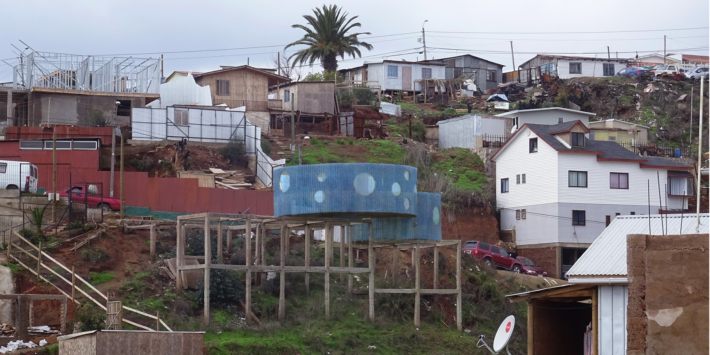
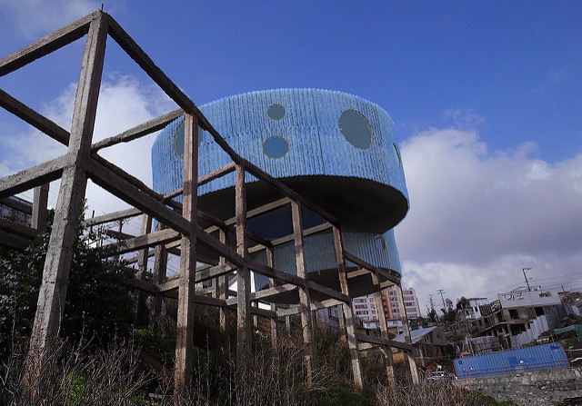

Proyecto Nº 001
El Allegado Nº8 / Sortes Vergilianae
El gran incendio de Valparaíso se originó el sábado 12 de abril de 2014 en el sector de camino La Pólvora, en la parte alta de la ciudad — el mayor incendio urbano en la historia de Chile. Las llamas bajaron cerros y quebradas en abanico hacia el noreste, afectando barrios completos del sector Almendral entre los cerros Mariposas, Monjas, La Cruz, El Litre, Las Cañas, Merced, Ramaditas y Rocuant.
Suertes virgilianas
Sortes Vergilianae fue una propuesta proyectada para ser financiada por la Dirección de Investigación de la PUCV: la construcción de una sala de clases y reuniones para el curso de Espacio Urbano 1 y 2 del Instituto de Arte, para disponer a los estudiantes a la interacción con la comunidad afectada. Se instala en una ruina producida por el incendio, en el sector de El Vergel.
Una lámpara en la ruina
La propuesta consiste en dos volúmenes circulares superpuestos, con un pequeño patio de luz circular en su interior. La cubierta semitransparente de color azul la hace aparecer como una gran lámpara al ser iluminada desde su interior al atardecer y entrada la noche.



33°03′S · 71°37′O